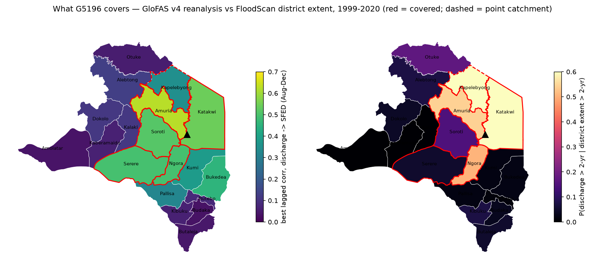
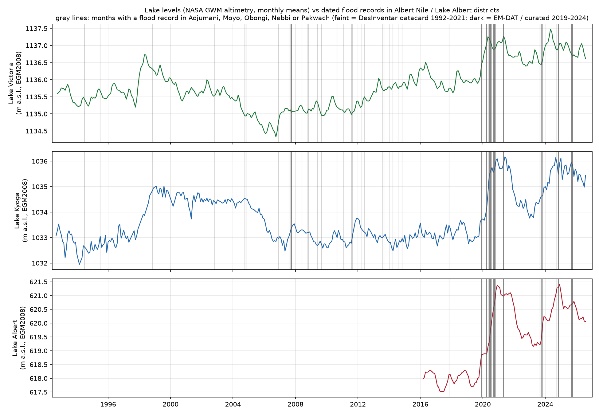
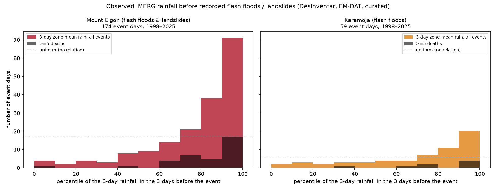

Interim analysis outputs. Each figure and table is produced by a script in the repo; nothing here is a trigger yet.
GloFAS v4 reanalysis discharge at the G5196 pixel against each candidate district's FloodScan flood-extent daily mean, 1999-2020: best lagged correlation in the Aug–Dec flood season, and the conditional probability that discharge is over its 2-year level when the district's extent is over its own 2-year level. Red outline = covered (corr ≥ 0.5 and P ≥ 0.4).

| district | membership | best lag (d) | best corr | P(Q>2yr | extent>2yr) | P(extent>2yr | Q>2yr) | covered |
|---|---|---|---|---|---|---|
| Amuria | core | 1 | 0.64 | 0.44 | 0.41 | True |
| Katakwi | core | 7 | 0.57 | 0.52 | 0.25 | True |
| Soroti | candidate | 19 | 0.53 | 0.20 | 0.06 | False |
| Serere | candidate | 30 | 0.51 | 0.04 | 0.01 | False |
| Ngora | candidate | 30 | 0.51 | 0.31 | 0.20 | False |
| Bukedea | candidate | 1 | 0.48 | 0.04 | 0.00 | False |
| Kumi | candidate | 24 | 0.41 | 0.03 | 0.00 | False |
| Kapelebyong | core | 2 | 0.36 | 0.40 | 0.08 | False |
| Pallisa | candidate | 30 | 0.34 | 0.00 | 0.00 | False |
| Kaberamaido | candidate | 0 | 0.18 | 0.00 | 0.00 | False |
| Alebtong | candidate | 0 | 0.14 | 0.00 | 0.00 | False |
| Dokolo | candidate | 0 | 0.13 | 0.11 | 0.01 | False |
| Kalaki | candidate | 6 | 0.13 | 0.00 | 0.00 | False |
| Butebo | candidate | 30 | 0.09 | 0.02 | 0.00 | False |
| Otuke | candidate | 0 | 0.07 | 0.00 | 0.00 | False |
| Kibuku | candidate | 0 | 0.05 | 0.00 | 0.00 | False |
| Amolatar | candidate | 0 | 0.02 | 0.00 | 0.00 | False |
| Butaleja | candidate | 0 | 0.02 | 0.04 | 0.01 | False |
| Budaka | candidate | 0 | 0.02 | 0.00 | 0.00 | False |
Reading: the point speaks for Amuria and Katakwi (lag 0–7 days), weakly for the Soroti–Ngora–Serere wetlands downstream (long lags, the wetland fill), and not at all for Pallisa, Butaleja or the Kyoga north shore. Kapelebyong, upstream, is barely visible to FloodScan. Reforecast-based thresholds and the backtest follow once the EWDS download completes.
Monthly altimetry levels of Lakes Victoria, Kyoga and Albert (NASA Global Water Monitor) against every dated flood record we hold for Adjumani, Moyo, Obongi, Nebbi and Pakwach (DesInventar datacards 1992–2021, EM-DAT, and curated 2019–2024 events).

Reading: two regimes. The large, well-documented backwater floods (Pakwach and Obongi 2020, 2021, Obongi/Palorinya Oct–Nov 2024) sit above the 90th percentile of Kyoga and Albert levels, with the Victoria → Kyoga → Albert chain giving months of lead. Most smaller DesInventar records (Moyo 2008, 2011, 2014; Nebbi 2007–2014) occurred at ordinary lake levels and are local-rain / tributary events. The zone therefore needs a lake-level leg and a rainfall leg.
Link 2 of the flash-flood chain (observed rain → impact), on IMERG daily rainfall averaged over each zone's core districts, 1998–2026: for every day-dated impact record in the zone (DesInventar datacards, EM-DAT, curated events) the 3-day rainfall in the three days before the event, as a percentile of all days.

Reading: events do happen on wet days — the median pre-event 3-day rainfall sits at the 86th percentile on Elgon and the 83rd in Karamoja, and the deadly events (≥5 deaths) at the 88th — but almost never on extreme days: only 2 % of events follow 3-day zone-mean rainfall above its 2-year level, and of the 17 zone-wide episodes above that level since 1998 only one coincided with a recorded event. A zone-mean rainfall return-period threshold of the usual kind would therefore miss nearly everything and mostly activate on non-events. The trigger needs a lower rainfall bar combined with antecedent wetness (the landslide literature's 'prolonged low-intensity rain'), finer spatial resolution (district or slope-unit rather than zone mean), and an explicit statement of the false-alarm ratio that comes with it. The forecast leg (CHIRPS-GEFS vs IMERG) follows when its table lands.
Uganda is capped at admin 1 in the team rasterstats database, so the district series are computed from the processed rasters directly.
Generated 2026-09-03 by pipeline/build_pages.py in
OCHA-DAP/ds-aa-uga-flooding. Work in progress — not a trigger.